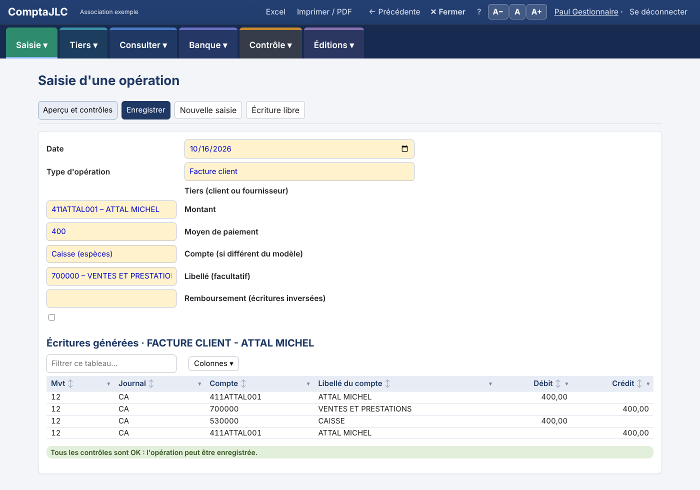
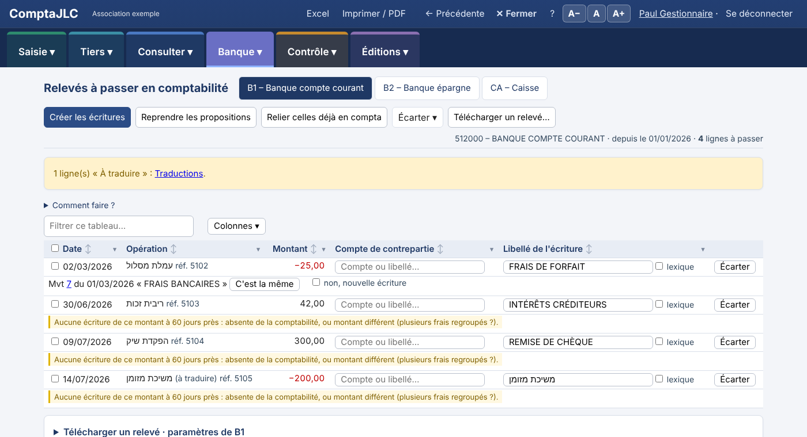

ComptaJLC est une application web de comptabilité ordinaire : saisie guidée, tiers (clients et fournisseurs), relevés bancaires passés en
comptabilité, journaux, situation financière, états annuels et clôture. Elle s'ouvre depuis un ordinateur, une tablette ou un téléphone,
sans rien installer.
Axe analytiqueun seul : Anal
Modes de travailAdministration · Gestion
Modèle de relevéBanque.xlsx
Écritureséquilibrées, historisées
Ce que fait ComptaJLC
Une seule base, partagée par tous, remplace les classeurs et les fichiers envoyés par e-mail : chacun voit les mêmes chiffres à jour.
Saisir sans être comptable : on choisit un type d'opération (facture client, règlement, recette, dépense, facture fournisseur, virement…) et l'application
génère les écritures équilibrées ; écriture libre et modification (motif obligatoire, avant / après gardés) restent possibles.
Un seul axe analytique, Anal : chaque compte du plan comptable porte un code Anal ; les écritures en héritent, il n'y a rien à choisir à la saisie.
Les codes se créent en une ligne (préfixe + numéro suivant + libellé).
Suivre les tiers : clients (411), fournisseurs (401) et autres types, avec adresse ; import d'un fichier Tiers.xlsx ; le solde du compte suffit à savoir
qui doit quoi ; lettrage automatique ou manuel.
Passer la banque en comptabilité : un seul modèle de relevé, Banque.xlsx (Journ, Date, Libelle, Debit, Credit), préparé en amont (Power Query par exemple) ;
téléchargé sans doublon. Pour chaque ligne sans écriture, on choisit le compte de contrepartie et l'écriture est créée. Une écriture déjà saisie est repérée et reliée.
Le libellé reste dans la langue d'origine (hébreu possible) ; une traduction est proposée si l'option est activée.
Joindre les justificatifs : scan ou photo sur chaque mouvement (depuis un téléphone aussi), dépôt en masse d'un ZIP rangé par numéro de mouvement.
Tenir les journaux : banque et caisse avec solde progressif, imprimables et exportables en Excel.
Éditer : situation financière (PDF et Excel), analytique par code Anal, états annuels avec comparaison à l'exercice précédent, budget,
clôture avec à-nouveaux et archive figée.

Saisie guidée : aperçu des écritures et contrôles.

Banque : lignes du relevé à passer en comptabilité.
Qui fait quoi : deux modes
Mode
Ce qu'il fait
Administration
Tous les droits, dont le paramétrage de base (journaux, préfixes, types de tiers, modèles d'opération, réglages, Paramètres Excel),
les imports / exports de fichiers, les utilisateurs et la base de données (sauvegardes, remise à zéro)
Gestion
La tenue de la comptabilité : saisie et corrections, plan comptable, codes Anal, tiers, justificatifs, banque, budget, contrôles, historique, éditions, clôture
Il n'y a pas d'autre mode. Chacun change son identifiant (un nom ou son adresse e-mail) et son mot de passe dans Mon compte.
Fonctionnalités
Les pages sont rangées en sept menus. Sur chaque page, tous les boutons sont regroupés en haut à gauche, sous le titre, et restent visibles
pendant le défilement ; dans toutes les listes, on cherche en tapant une partie du code ou du libellé.
Menu
Ce qu'on y fait
Saisie
Saisie guidée (aperçu et contrôles), écriture libre, modification d'une écriture rappelée par son numéro, justificatifs, plan comptable, codes Anal, nouveaux tiers
Tiers
Liste et fiches (adresse, CP, ville), import Tiers.xlsx, solde, lettrage
Consulter
Tableau de bord, écritures, journaux de banque et de caisse, grand livre, balance, analytique par code Anal
Banque
Relevés à passer en compta : téléchargement sans doublon, compte de contrepartie, création des écritures ; historique des imports ; traductions
Contrôle
État des règles comptables ; historique de toutes les actions (recherche, Excel)
Éditions
Situation financière, état détaillé par code Anal, états annuels et budget (N et N-1), clôture, exports Excel, présentation et mode d'emploi (PDF)
Administration
Utilisateurs, journaux, paramètres (Excel), imports et exports, base de données : sauvegardes, restauration, remise à zéro ; licence
Icône sur le Bureau : Edge › … › Applications › Installer ce site en tant qu'application ; Chrome › ⋮ › Caster, enregistrer et partager › Installer la page en tant qu'application.
Sur un téléphone : Partager › Sur l'écran d'accueil.
Les boutons A− A A+ en haut à droite règlent la taille des caractères, mémorisée sur chaque appareil.
Un nouvel utilisateur reçoit son compte de l'administrateur (Administration › Utilisateurs).
Les mises à jour se font en une commande (bash ~/maj.sh), avec sauvegarde automatique et retour arrière possible.
Garde-fous
Chaque mouvement est équilibré (débit = crédit) et chaque ligne porte soit un débit, soit un crédit.
Comptes, journaux et codes doivent exister ; chaque compte porte un code Anal ; la date doit tomber dans l'exercice ouvert ; un exercice clôturé est verrouillé.
Pas de doublon : relevé retéléchargé sans ligne en double, une seule écriture par ligne du relevé, écriture déjà saisie signalée.
Une correction exige un motif ; l'avant et l'après sont gardés. L'historique note qui a fait quoi et quand.
Connexion chiffrée (HTTPS), mot de passe par personne, droits selon le mode ; le paramétrage de base est réservé à l'administrateur.
Sauvegardes à chaque mise à jour, chaque nuit (tâche à activer) et à la demande ; restauration par la page Base de données ou la commande restaurer ;
jeu complet d'exports vers le dossier Exports ; archive Excel figée à chaque clôture.
Pour démarrer
Créer le compte PythonAnywhere et installer le site (document « Installation et mises à jour »).
Au premier accès, suivre l'assistant : nom de l'association, devise, plan comptable (de base ou le vôtre), premier exercice, banques et caisse.
Vérifier le code Anal de chaque compte du plan, créer les utilisateurs (Administration › Utilisateurs).
Importer les tiers (Tiers.xlsx) et les soldes d'ouverture, puis télécharger le premier relevé (Banque.xlsx).
Activer la sauvegarde automatique de nuit (PythonAnywhere › Tasks).
Documents associés : mode d'emploi détaillé (Éditions › Mode d'emploi, PDF) · principes de fonctionnement · installation et mises à jour · protocole de mise à jour (PDF).